会員証ナビ
会員証やポイントカードをまとめて管理できます。読み取ったバーコードは、元のカードと同じ形式で表示します。カードはiCloudで同期され、Apple Watchでも使えます。
ダウンロード


サポート
ご質問や不具合のご報告は、メールでご連絡ください。
お問い合わせの前に
不具合がある場合は、まず以下をご確認ください。
- カメラが使えない場合 iPhoneの設定 → プライバシーとセキュリティ → カメラ → 会員証ナビのアクセスをオンにしてください。
- 別のデバイスにカードが表示されない場合 両方のデバイスが同じApple Accountにサインインし、iCloudが有効になっているかご確認ください。アプリの「設定」タブでiCloud同期の状態を確認できます。初回の同期には少し時間がかかることがあります。
- レジでバーコードを読み取れない場合 コード表示中は画面が自動で最大の明るさになります（設定でオン・オフ可能）。特定のお店のスキャナーで読み取れない場合は、お店とカードの種類を添えてご連絡ください。
- Apple Watchに「コードを生成できませんでした」と表示される場合 そのカードを一度iPhoneで開き、iCloudの同期を少し待ってから、もう一度お試しください。
よくある質問
- 元のカードと同じバーコードが表示されますか？
はい。読み取ったバーコードの形式や設定（Code 128、EAN、Codabar、QRなど）を保存し、同じ構成で表示します。 - iPhoneをなくしたり、アプリを再インストールしたらどうなりますか？
カードはご自身のiCloudに保存されています。同じApple Accountにサインインすれば自動的に復元されます。 - Apple Watchで使えますか？
はい。白い背景でコードを画面いっぱいに表示します。カードはApple Watchにも保存されるため、iPhoneが手元になくても使えます。 - インターネット接続は必要ですか？
iCloud同期のときだけ必要です。カードとコードの表示は完全にオフラインで動作します。 - 開発者は私のカードを見られますか？
いいえ。カードのデータはご自身の端末とiCloudにのみ保存され、開発者はアクセスできません。開発者が管理するサーバーやアプリ独自のアカウント、分析ツールはありません。 - 対応しているコードの種類は？
QR、Code 128、Code 39、Code 93、EAN-13、EAN-8、UPC-E、ITF、Codabar、PDF417、Aztec、および会員番号の表示に対応しています。 - スキャンしたコードの番号を編集できないのはなぜ？
元のカードと同じコードを表示するため、読み取った番号は変更できません。別のコードに変更したい場合は、もう一度スキャンしてください。手入力したカードの番号は編集できます。 - 写真ライブラリ全体にアクセスしますか？
いいえ。写真の選択画面で選んだ1枚だけを読み取ります。写真ライブラリ全体へのアクセスは求めません。
使い方
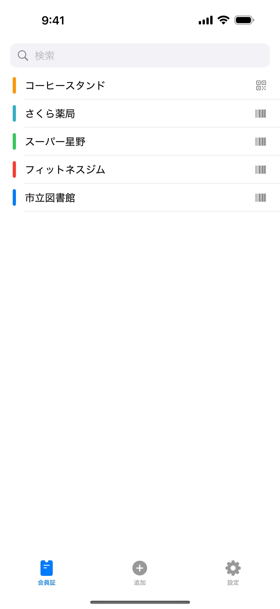
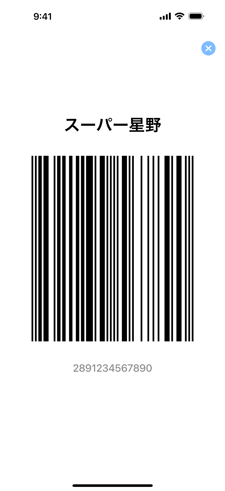
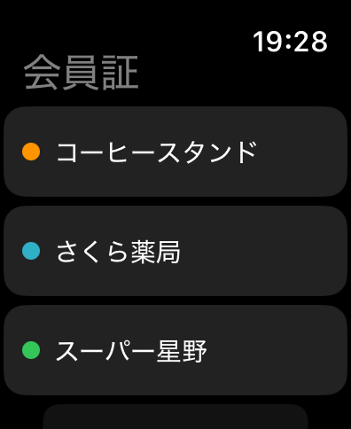
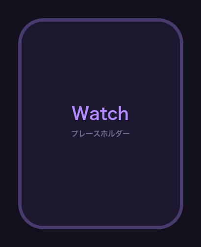
カード一覧
「会員証」タブには、保存したカードが名前順に並びます。カードをタップするとコードが表示されます。上部の検索欄では、カード名や番号で探せます。
カード番号が周囲から見えないよう、一覧には番号を表示していません。
カードを表示する
カードをタップすると、コードと番号が画面いっぱいに表示されます。コードを読み取れない場合は、番号をお店の方に伝えられます。コードの表示中は読み取りやすいよう画面が最も明るくなり、閉じると元の明るさに戻ります。
バーコードの線は、画面のピクセルに合わせて描画します。線の幅の比率が崩れないようにし、お店のスキャナーで読み取りやすくしています。
カードを追加する
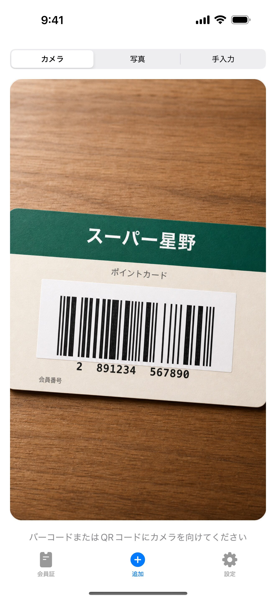
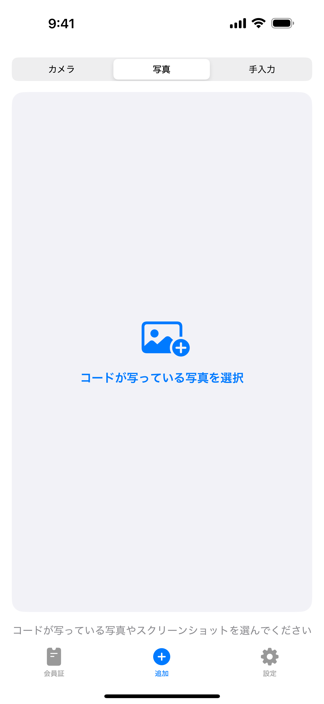
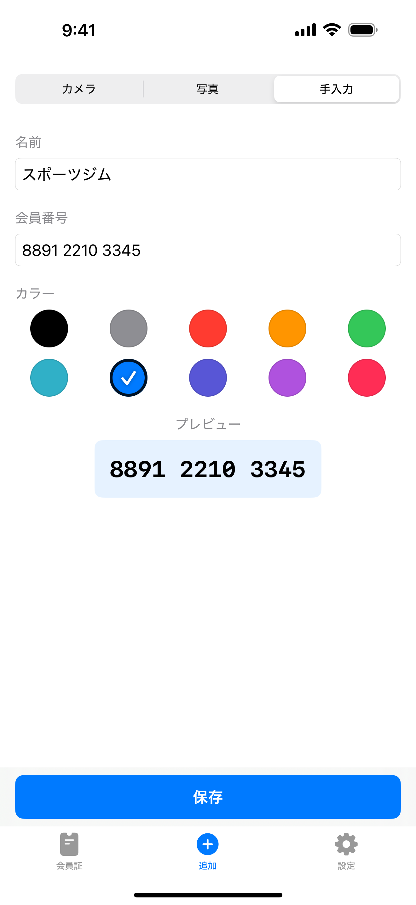
「追加」タブには3つの方法があります。上の切り替えをタップするか、左右にスワイプして移動できます。
- カメラ — お手持ちのカードのバーコードやQRコードにカメラを向けます。
- 写真 — コードが写っている写真やスクリーンショットを選びます。
- 手入力 — 番号だけのカードは、会員番号を直接入力します。
コードを読み取ると確認画面が開き、番号が表示されます。手元のカードと見比べてから保存し、名前と色を設定してください。読み取り直す場合は「破棄」をタップするとカメラに戻れます。
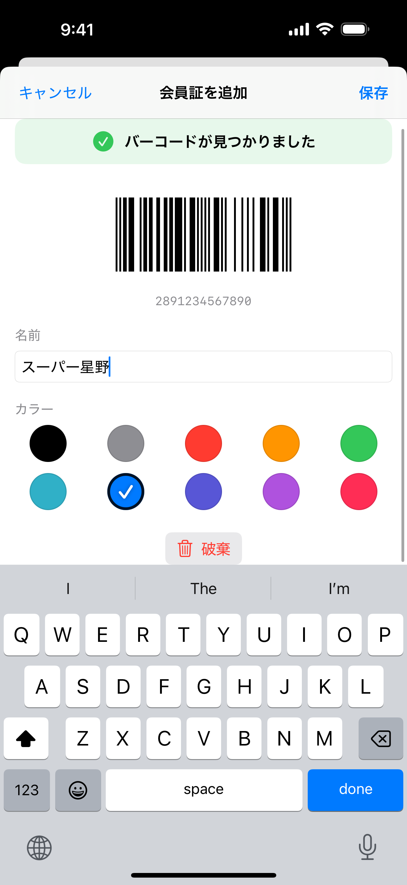
ほかのアプリの中にあるコードも取り込めます。スクリーンショットを撮り、共有から会員証ナビを選んでください。画像をスキャンして、同じ確認画面が開きます。
編集と削除
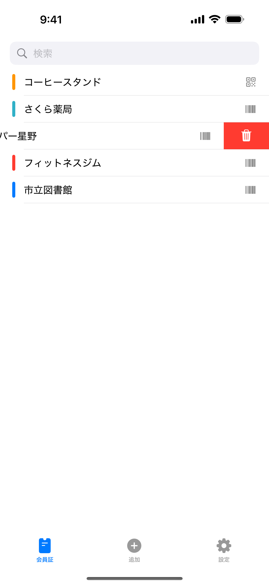
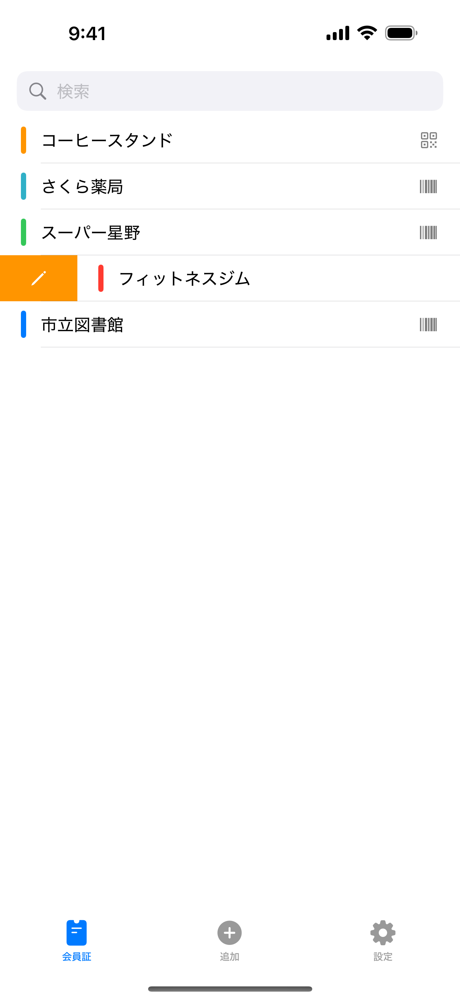
カードを左にスワイプすると削除、右にスワイプすると編集です。編集では名前と色を変更できます。
読み取ったカードの番号と形式は確認できますが、変更はできません。元のカードと同じコードを表示するためです。別のコードに変更したい場合は、もう一度スキャンして追加してください。手入力したカードは番号も編集できます。
Apple Watch
Apple Watchでも同じカードを一覧から選べます。コードは白い背景で画面いっぱいに表示されます。カードはApple Watchにも保存されるため、iPhoneが手元になくても使えます。
追加したカードは、iCloudの同期が完了するとApple Watchにも表示されます。「コードを生成できませんでした」と表示された場合は、そのカードを一度iPhoneで開き、少し待ってからお試しください。
設定
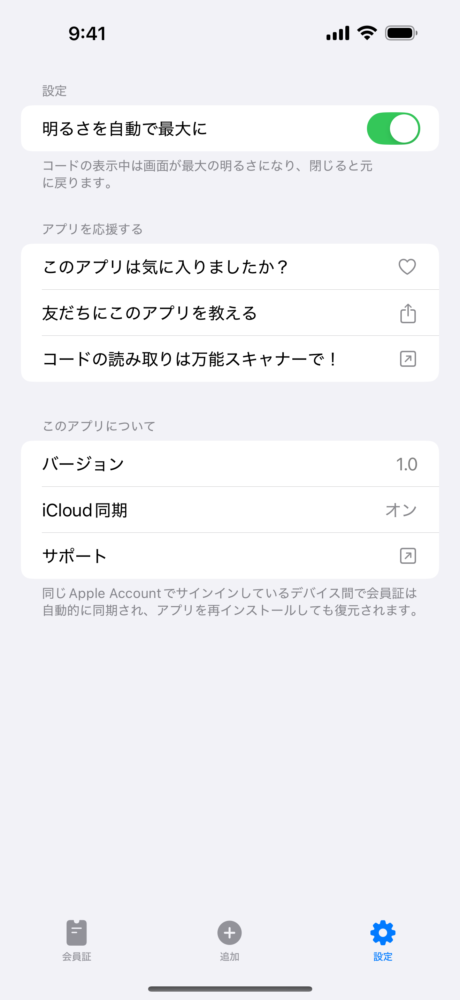
明るさを自動で最大にをオンにすると、コードの表示中に画面が最も明るくなります。明るさを自動で変えたくない場合は、オフにしてください。
iCloud同期では、同期の状態を確認できます。オン・オフを切り替えるスイッチではありません。「サインインしていません」と表示された場合は、「設定」アプリでiCloudにサインインしてください。同期したカードは、アプリを再インストールした場合も復元できます。
法的情報
プライバシーポリシー
最終更新: 2026年7月
はじめに
会員証ナビは「データはユーザーのもの」というシンプルな原則のもとに作られています。本ポリシーでは、アプリがアクセスする情報とその取り扱いについて説明します。
カメラへのアクセス
アプリはカードのバーコードやQRコードをスキャンするためにカメラを使用します。カメラ映像はすべて端末内で処理されます。画像や映像が保存・送信・共有されることは一切ありません。
写真へのアクセス
写真からカードを追加する際は、システムのフォトピッカーで1枚だけ選択する方式です。アプリが写真ライブラリへのアクセス権を受け取ることはありません。
カードのデータとiCloud
保存したカードは端末内に保存され、iCloudを利用している場合はあなた個人のiCloudデータベース（Apple CloudKit）を通じて同期されます。これによりApple Watchを含むすべてのデバイスにカードが表示され、アプリを再インストールしても復元されます。このデータベースはあなたのApple Accountに属するもので、開発者が内容を読み取り、アクセスし、共有することはできません。開発者独自のサーバーはありません。
データ収集なし
個人情報の収集・保存・処理は行いません。アカウント登録は不要で、分析ツール・広告・トラッキングも一切含まれていません。
購入について
会員証ナビはAppleのApp Storeを通じた買い切りアプリです。Apple ID、支払い方法、その他の決済情報を開発者が受け取ることはありません。
お子様のプライバシー
開発者による個人データの収集がないため、会員証ナビは児童オンラインプライバシー保護法（COPPA）および世界各国の同様の規制に準拠しています。
本ポリシーの変更
本プライバシーポリシーは随時更新されることがあります。変更は掲載と同時に有効になります。定期的にこのページをご確認ください。
お問い合わせ
本プライバシーポリシーに関するご質問は次の連絡先まで: support [at] hoshinosoftware [dot] com
利用規約
最終更新: 2026年7月
規約への同意
会員証ナビをダウンロードまたは使用することにより、本利用規約に同意したものとみなされます。同意いただけない場合は、アプリを使用しないでください。
ライセンス
Hoshino Softwareは、本規約およびAppleのApp Store利用規約に従い、お客様のAppleデバイス上で会員証ナビを使用する個人的、譲渡不可、非独占的なライセンスを付与します。
購入と返金
会員証ナビはAppleのApp Storeを通じた買い切りアプリです。課金と返金はApp Storeの規約に基づきAppleが取り扱います。返金のご依頼は開発者ではなくAppleへお願いします。
許可される使用
会員証ナビは合法的な目的で、かつお客様が使用を許可されているカードとコードに対してのみ使用できます。適用される法令に違反する方法でアプリを使用しないことに同意するものとします。
無保証
会員証ナビは明示または黙示を問わずいかなる保証もなく「現状のまま」提供されます。アプリにエラーがないこと、中断されないこと、特定の目的に適合すること、また第三者のスキャナーが表示されたコードを必ず受け付けることを保証するものではありません。
責任の制限
適用法が許容する最大限の範囲において、Hoshino Softwareは、会員証ナビの使用または使用不能から生じる直接的、間接的、偶発的、特別または結果的損害について責任を負いません。
本規約の変更
本利用規約は随時更新されることがあります。変更掲載後もアプリの使用を継続した場合、改訂後の規約に同意したものとみなされます。
準拠法
本規約は、Hoshino Softwareが事業を行う法域の法律に準拠します。
お問い合わせ
本利用規約に関するご質問は次の連絡先まで: support [at] hoshinosoftware [dot] com